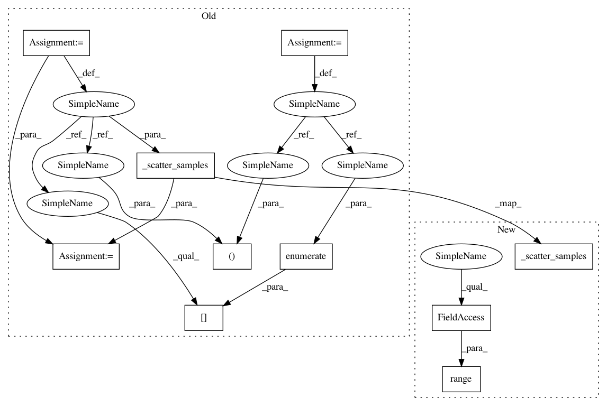

a615533788c1842483a9708787db0d73902dc1ec,fairseq/multiprocessing_trainer.py,MultiprocessingTrainer,valid_step,#MultiprocessingTrainer#Any#Any#,191
Before Change
def valid_step(self, samples, criterion):
Do forward pass in parallel.
// scatter sample across GPUs
samples, data_events = self._scatter_samples(samples, volatile=True)
criterion.prepare(samples)
// forward pass
losses = [
self.call_async(rank, "_async_valid_step", sample=samples[rank],
criterion=criterion, data_event=event)
for rank, event in enumerate(data_events)
]
// aggregate losses
loss = criterion.aggregate(Future.gen_list(losses))
After Change
def valid_step(self, samples, criterion):
Do forward pass in parallel.
// scatter sample across GPUs
self._scatter_samples(samples, volatile=True)
criterion.prepare(samples)
// forward pass
losses = [
self.call_async(rank, "_async_valid_step", criterion=criterion)
for rank in range(self.num_replicas)
]
// aggregate losses
loss = criterion.aggregate(Future.gen_list(losses))
In pattern: SUPERPATTERN
Frequency: 4
Non-data size: 10
Instances
Project Name: pytorch/fairseq
Commit Name: a615533788c1842483a9708787db0d73902dc1ec
Time: 2017-09-19
Author: myleott@fb.com
File Name: fairseq/multiprocessing_trainer.py
Class Name: MultiprocessingTrainer
Method Name: valid_step
Project Name: elbayadm/attn2d
Commit Name: a615533788c1842483a9708787db0d73902dc1ec
Time: 2017-09-19
Author: myleott@fb.com
File Name: fairseq/multiprocessing_trainer.py
Class Name: MultiprocessingTrainer
Method Name: train_step
Project Name: elbayadm/attn2d
Commit Name: a615533788c1842483a9708787db0d73902dc1ec
Time: 2017-09-19
Author: myleott@fb.com
File Name: fairseq/multiprocessing_trainer.py
Class Name: MultiprocessingTrainer
Method Name: valid_step